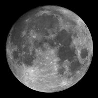

Satélites
Lua
A Lua é o único satélite natural da Terra nota 1 e o quinto maior do Sistema Solar. É o maior satélite natural de um planeta no sistema solar em relação ao tamanho do seu corpo primário, nota 2 tendo 27% do diâmetro e 60% da densidade da Terra, o que representa 1⁄81 da sua massa.
Entre os satélites cuja densidade é conhecida, a Lua é o segundo mais denso. Estima-se que a formação da Lua tenha ocorrido há cerca de 4,5 mil milhões de anos, relativamente pouco tempo após a formação da Terra. Embora no passado tenham sido propostas várias hipóteses para a sua origem, a explicação mais consensual atualmente é a de que a Lua tenha sido formada a partir dos detritos de um impacto de proporções gigantescas entre a Terra e um outro corpo do tamanho de Marte.
A Lua encontra-se em rotação sincronizada com a Terra, mostrando sempre a mesma face visível, marcada por mares vulcânicos escuros entre montanhas cristalinas e proeminentes crateras de impacto. É o mais brilhante objeto no céu a seguir ao Sol, embora a sua superfície seja na realidade escura, com uma refletância pouco acima da do asfalto. A sua proeminência no céu e o seu ciclo regular de fases tornaram a Lua, desde a antiguidade, uma importante referência cultural na língua, em calendários, na arte e na mitologia. A influência da gravidade da Lua está na origem das marés oceânicas e ao aumento do dia sideral da Terra. A sua atual distância orbital, cerca de trinta vezes o diâmetro da Terra, faz com que no céu o satélite pareça ter o mesmo tamanho do Sol, permitindo-lhe cobri-lo por completo durante um eclipse solar total.